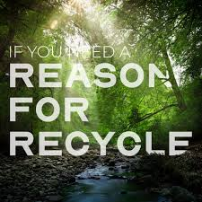

What can I compost?
Our How2Compost label only goes on packages or
products that have been certified compostable in an industrial facility
by the Biodegradable Products Institute (BPI).
BPI is the leading third-party verification for compostable products in North America.
program is specifically for industrial compostability and does not
verify items for backyard compostability.
The test standards that BPI certifies are specific to industrial environments.
Where can I compost it?
Check with your city to see if organic recycling is a service in your area.
The How2Compost label meets the criteria to break
down in an industrial composting system. These
facilities take large volumes of organic materials
and carefully monitor nutrient, oxygen, moisture,
and temperature levels to produce a high-quality
compost product. The How2Compost label does
NOT indicate a package’s ability to break down in
home compost. While some certified industrially
compostable products can break down in home
compost conditions, many require conditions only
achievable through industrial compost methods.
To learn more about home compost, visit the EPA website.